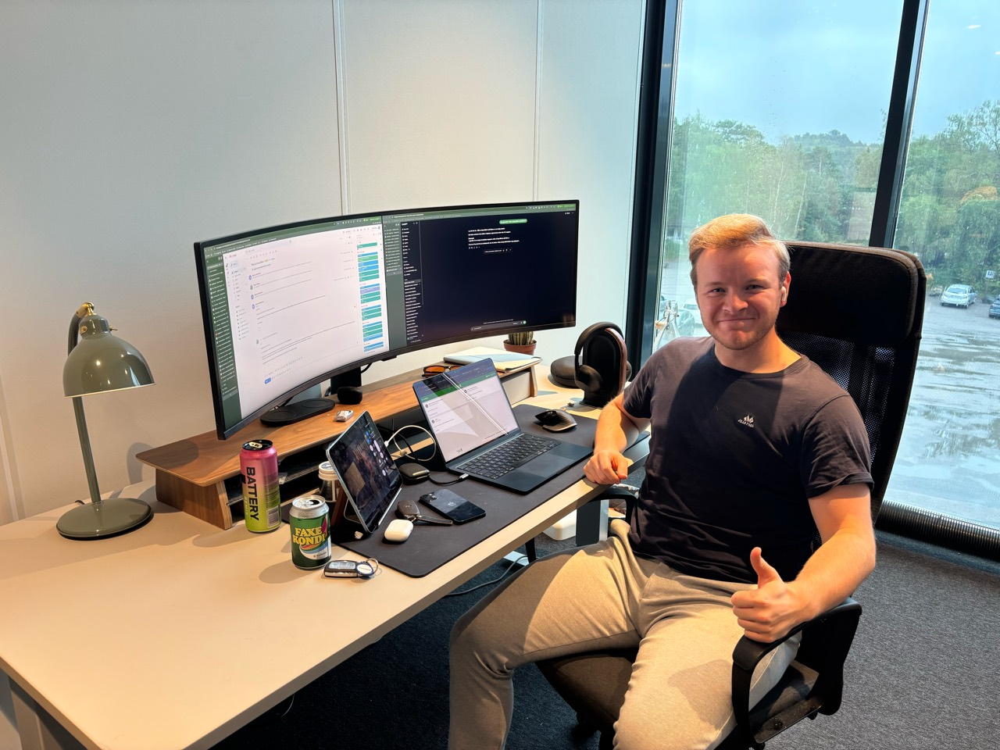
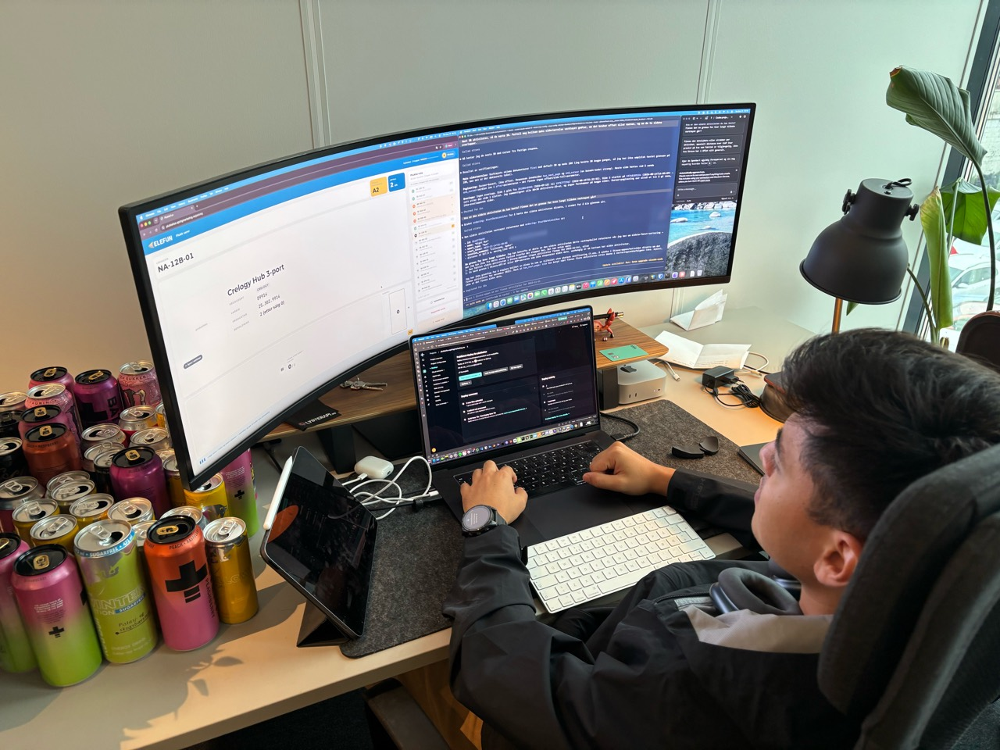
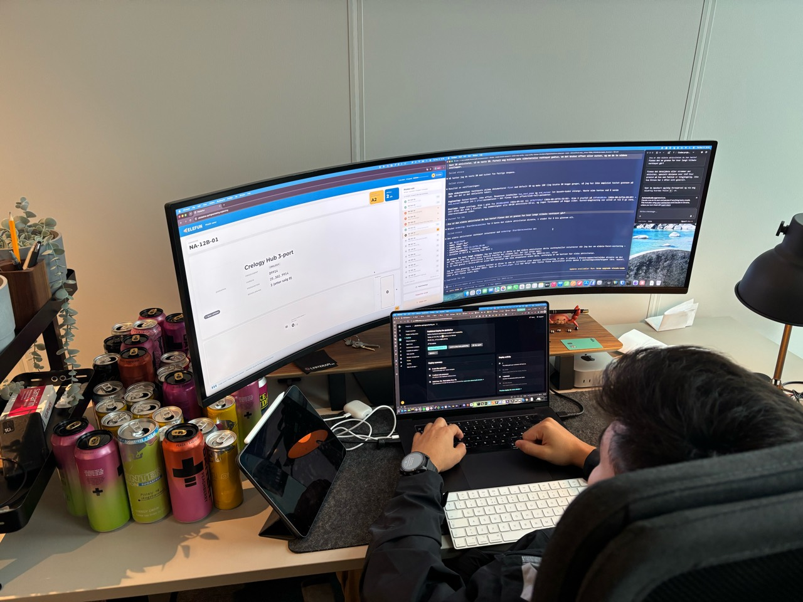

Første status fra praksis
Praksisstedet
Jeg har praksis hos Spring Marketing i Lillesand. Bedriften jobber med digital markedsføring for norske nettbutikker, blant annet Google Ads, synlighet i søk, nyhetsbrev og innholdsproduksjon. På nettsiden sin oppgir de erfaring fra over 70 nettbutikker. At de retter seg spesielt mot netthandel, er et tydelig særtrekk ved bedriften.
Min praksisoppgave er knyttet til Elefun. Der bidrar jeg i utviklingen av PlukkeFun, en løsning som skal gjøre ordreplukking på lageret enklere og mer oversiktlig.
Arbeidsoppgavene mine
Jeg arbeider med både utforming og utvikling av PlukkeFun. Så langt har jeg jobbet med grensesnittet for skanning av ordre, tildeling av tralle, plukking og rapportering av avvik. Jeg har særlig justert flyten og størrelsen på elementene slik at løsningen blir lettere å bruke på iPad.
Jeg har også jobbet med hvordan en pågående plukkeøkt kan lagres og hentes fram igjen hvis siden oppdateres. Det har gitt meg innblikk i samspillet mellom frontend, backend og lagring av data.
Utfordringer og erfaringer
Det mest krevende hittil har vært oppstarten. Jeg kom inn i en eksisterende løsning med kode, syntaks og arkitektur jeg ikke kjente fra før. Jeg måtte bruke tid på å forstå hvordan delene henger sammen før jeg kunne gjøre endringer med trygghet. Etter hvert som jeg har blitt kjent med systemet, har jeg kunnet bidra mer selvstendig.
Det er spennende å utvikle noe som skal brukes i en konkret arbeidssituasjon. Når en lageransatt skal skanne, finne varer og håndtere avvik, må grensesnittet være tydelig og raskt å bruke. Det gjør de små detaljene i løsningen viktige.
Bilder og video
Her er tre bilder fra kontoret. Jeg legger til mer visuelt materiale fra praksisarbeidet etter hvert, blant annet et kort skjermopptak eller en video.


